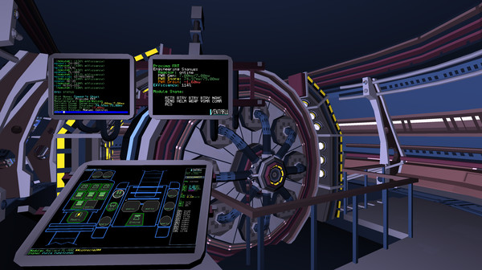

Objects in Space is an open world 2D stealth-action space trading game set in Apollo – a huge cluster of star systems dozens of lightyears away from Earth. You are a ship’s captain, buying and selling wares in order to keep your bucket o' bolts afloat and stay one step ahead of pirates, organised criminals, corrupt governments and shady laws.
A galaxy of characters await you in Objects in Space. The game focuses on a myriad of short stories rather than one main storyline with a hero’s journey, so it’s up to you how much or how little narrative you want in your game.
Combat in Objects sees ships treated more like Cold War submarines than WWII dogfighters. You’ll be running silent, planning manoeuvres far ahead of time and engaging in deadly games of cat-and-mouse with nebulous enemies, but only for those players who seek it out. Combat-averse players can pay attention to the news and avoid pirate-heavy systems and choose not to explore the deadly uncharted areas of space where greater numbers of pirates lurk.
It’ll be up to you to keep your ship’s systems running as quietly as possible, going fully ‘dark’ if you have to, just floating with your current trajectory and speed hoping to avoid showing up on anyone else’s scanners as you traverse some of the most dangerous shipping lanes in space.
To make your money, there are over fifty employers and your reputation with each one will dictate how many passenger, cargo or bounty-hunting contracts are available to you. But be warned - failure to complete a contract might see your rep plummet with that employer. So when you get an SOS signal from a nearby ship but have a deadline to keep, what will you do?
Your ship is completely customisable down to the tiniest component of each module. If your battery dies, it’s your own fault. You can play it safe in the central systems or design your ship with the ability to outrun, outfight or out-hide your opponents and make your fortune in the outer rims. But be careful! You are just as easily prey as predator in deep space...
in GOG in Steam